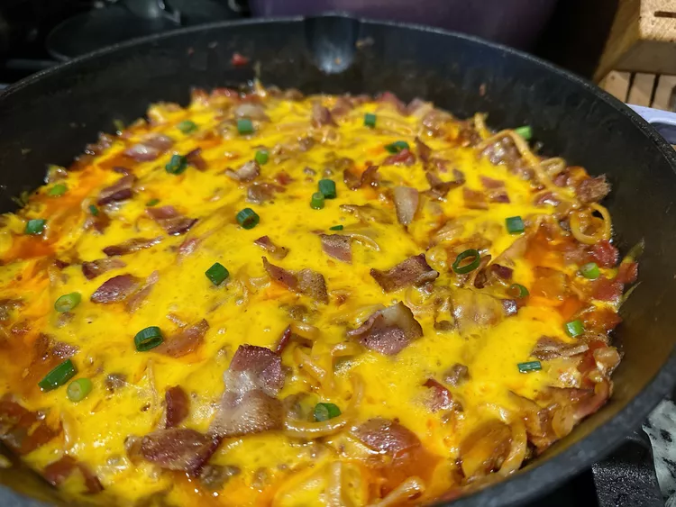

Cowboy Spaghetti

Description
Everyone will love this cowboy spaghetti, a fun twist with bacon, cheese,
and pasta in a spicy beef and tomato sauce. The best part is that it’s a
one-dish meal, cooked in a cast iron skillet.
Ingredients
- 6 strips baconl
- 1 onion, choppedl
- 2 cloves garlic, mincedl
- 1/2 teaspoon saltl
- 1/4 teaspoon freshly ground black pepperl
- 1 pound ground beefl
- 1 1/2 cups beef brothl
- 2 teaspoons Worcestershire saucel
- 2 teaspoons hot sauce, or to tastel
- 8 ounces spaghetti noodlesl
-
1 (10 ounce) can diced tomatoes with green chiles (such as Ro-Tel®
Original)l
- 1 (14.5 ounce) can fire roasted tomatoesl
- 1 (4 ounce) can tomato saucel
- 1/2 cup shredded sharp Cheddar cheesel
- 3 green onions, sliced, or as needed for garnishl